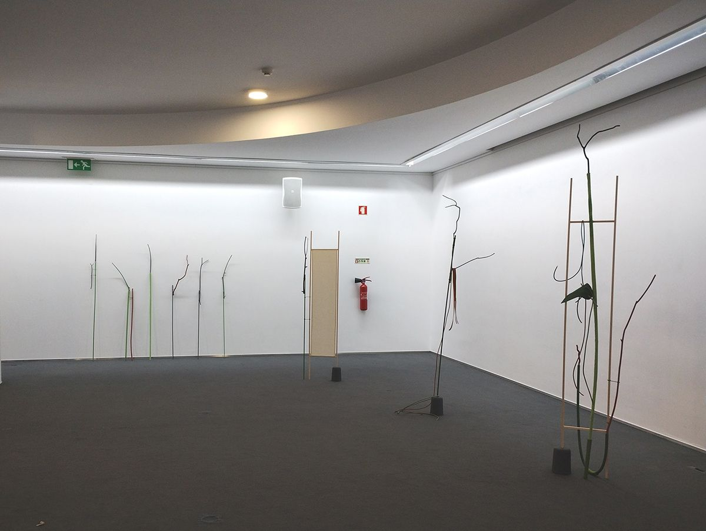

Sativa
Biblioteca Municipal de Águeda and ESTGA – Universidade de Aveiro, 15.07–23.08.2023. O Desenho como Pensamento series, artistic direction by Alexandre Baptista
Solo exhibition in the second cycle of O Desenho como Pensamento (Drawing as Thought), with sculptures from the Naturfatura series.

Press
- O Desenho como Pensamento: 5.º módulo de exposições individuais ↗Daniel Madeira · Umbigo · 10.08.2023 · PT